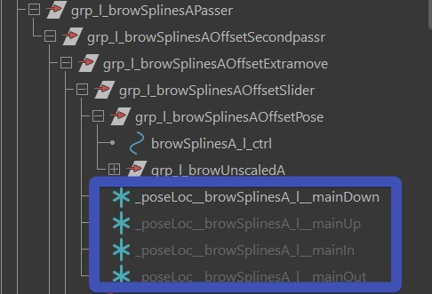
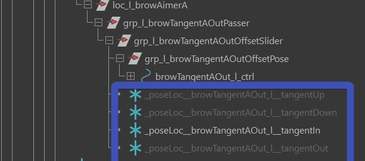

Brows
BlendShapes
The blendShape targets that you can sculpt in the ShapeEditor are:
innerBrowDown
innerBrowUp
browIn
browOut
outerBrowUp
outerBrowDown
Note
There are some additional corrective targets that can be sculpted, but those are only available when you use the Splines as shown below
Brow Splines
If you want a spline rig with a ton of ctrls, use the browSplinesSurface() function. On the brows the control set
is different to the control set you get with blendShapes.

Brow Splines - Blueprints
And those joints are sliding along the two nurbs surfaces surface_forehead and surface_forehead_eyeSocket

Most joints are sliding along the surface_forhead surface but the ones below the main line are sliding along
the surface_forehead_eyeSocket
To create those surfaces, first click the button Import Default Surfaces and shape them.
Tip
To get them shaped as good as possible to the forhead, the easiest thing might be to shape it roughly
and then create a shrinkWrap with option closest to snap it to the head geo.
Then select vertices and click the button Create Left Brow Curve. You adjust the curve after, the cvs of that
curve don't necessarily need to be on the vertices of the skin mesh.
Then click Create Left Brow Orientation Locators and orient those locators. Make sure to have their up axis
go along the lines of the surfaces, otherwise you might get the feeling the joints are moving a slightly different location:

Brow Splines - fVerticalSplineOffsets
fVerticalSplineOffsets is the attribute that defines the exra rows. It's a list of all the rows. Negative is below the
main brows, and positive is above. If you want those extra rows, you can try with [-0.05, 0.1]
Adjusting the speed of those is done with passer attributes.

Brow Splines - skinCluster
For skinning them, just select the mesh and click the button Add Influences to Selected. This just adds the influences! Then you can paint them with the SkinCluster -> Flood tool. Also, you can use the SkinCluster -> Smooth tool, but try to keep the iterations at 1!
Tip
If later you change the joint count or blueprint positions, you can also fix the skinning with the Flood tool, but turn on the Distribute Weights option
This did NOT do the middle brows yet. Because it's best to just work on the skinning of the main brows first. And only add the Middle one if you actually need it.
Brow Splines - Middle
The middle brow ctrl should be on by default, but if not, turn on bMiddle
And it comes with 2 joints:
- jnt_m_browMiddleDefault: Just following the side ctrls
- jnt_m_browMiddle: like the default one, but also reacting to the browMiddle_ctrl
On the actual browMiddle_ctrl you can set how much he should follow the side ctrls. And on the passer you have some extra attributes that you can use to "sculpt" a crease with skinning when the side brows are coming in. Sometimes you get a nicely lightweight crease. But depending on the model, sometimes it's easier to just do the crease with corrective blendShapes.
Note
Don't forget to save those values with the ** === DEFAULT ATTRS === ** button
Brow Splines - Extra Attributes
Once you have a rough skinning pass, it's time to adjust the Passer Attributes.
On the Passer of browMain_l_ctrl you've got multiplyIn/Out/Down/Up, those are to finetune the movements when for example
the brows shouldn't go down as much as they should go up. Even though thoes are on the main ctrl, the
micro ctrls (browSplines[ABC]_l_ctrl) will also get affected by this
The passers of the three micro ctrls (browSplines[ABC]_l_ctrl) have
- offsetSplineRotateByAnim: When rotating the micro ctrls, should the offset splines also get that rotation?
- autoAim: should the micro ctrls aim to each others or not
- upVectorFromCurveTangent: if it's 1.0, the joints are aiming along the curve. For the outer ones you might want to set it to 0
Brow Splines - PoseLocs
There are 2 sets of locators.
Micro Ctrls
Those are driven by the browMain_l_ctrl, and are posing the Micro Ctrls (browSplines[ABC]_l_ctrl):

Very often they are just used for the down motion and just the middle, to have the brow
straighten as the browMain_l_ctrl goes down:

Tangent Ctrls
With those you can pose the Tangent Ctrls:

Tip
At this point it's very helpful to apply the Rom Animation by clicking the button Create Rom Animation
Brow Splines - Correctives
If you get stuck not being able to hit a proper shapes with combination of skinning and poseLocators, there's still the option of adding correctives.
browSplinesSplitCtrlsUp
browSplinesSplitCtrlsDown
browSplinesInA
browSplinesInWrinklesA (same as browSplinesInA, but an additional wrinkle attribute will turn it on)
browSplinesUpA
browSplinesUpB
browSplinesUpC
browSplinesDownA
browSplinesDownB
browSplinesDownC
browSplinesSplitJointsUp (experimental - heavy!)
browSplinesSplitJointsDown (experimental - heavy!)
Tip
Keep in mind you are not limited to those. You can create combo of them, and even combo with others.
And if it's still not enough, you can add extra correctives with the ddCorrectives attribute
in blendShapesAndSliders() function.